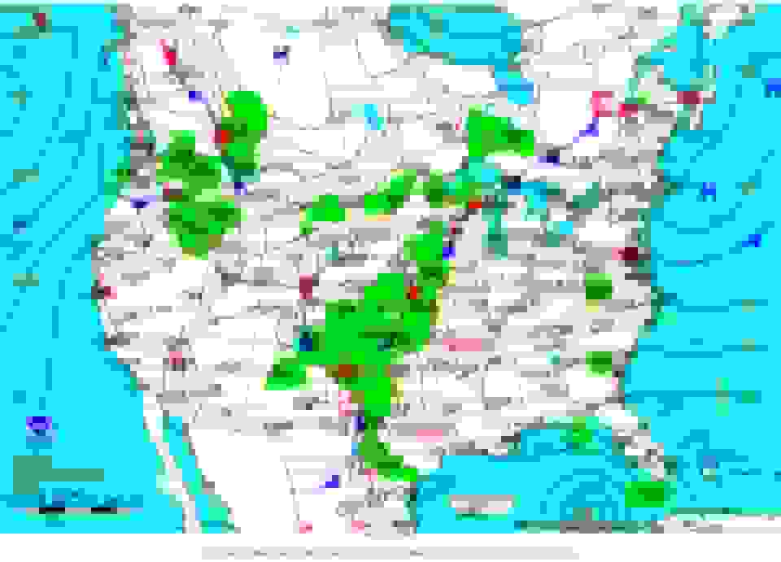

About Nigeria
Nigeria is a country in West Africa and is one of the most populous countries in Africa. It is known for its diverse cultures, languages, natural resources, and vibrant cities.
- Area:
- 923,768 km²
- Population:
- Over 200 million
- Capital:
- Abuja
- Currency:
- Nigerian Naira (₦)
- Official Language:
- English
Weather

Nigeria has a tropical climate with temperatures that vary across different regions of the country.
- Temperature:
- 30 °C
- Conditions:
- Partly Cloudy
- Wind:
- 10 km/h
- Wind Chill:
- N/A